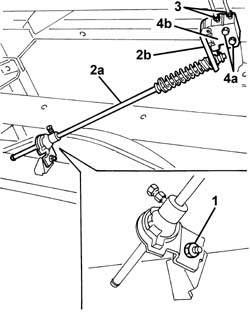
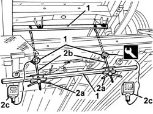
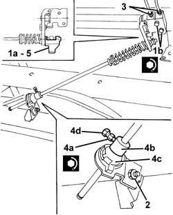

3330C60 LOAD PROPORTIONING VALVE - R + R INCLUDES ADJUSTMENT
- Path
- Procedures > 33 BRAKING SYSTEM > 3330 HYDRAULIC BRAKING SYSTEM > 3330C BRAKE PUMP, RESERVOIR AND LOAD PROPORTIONING VALVE > 3330C60 LOAD PROPORTIONING VALVE - R + R INCLUDES ADJUSTMENT
- Kind
- repair procedure (removal / refitting; the operation number is the code)
- Applies to
- all engines; all production periods
- Interactive page
- https://sloeber94.github.io/elrnDB-fDct/en/#/244001106
Applies to: all engines; all production periods
 Removing
Removing
 Refitting
Refitting- If the load proportioning valve has to be replaced, the weight of the rear axle on the ground should be measured and noted.
- Position the vehicle on the lift.
- Raise the vehicle.
1. Working underneath the vehicle, undo the nut and the bolt fixing the load proportioning valve rod to the rear axle.
2. Remove the load proportioning valve rod (2a) releasing it from the load proportioning valve body lever (2b).
3. Undo the connectors and let the hydraulic fluid drain into a suitable container.
4. Undo the bolts (4a) and remove the load proportioning valve casing (4b).

Applies to: all engines; all production periods
Refitting
Removing- To refit the same load proportioning valve removed previously, proceed as follows.
- Check that the load proportioning valve is not damaged.
- Place the load proportioning valve in position and secure it using the bolts.
 | Value - daNm | Fastening | Component | Ø |
|---|---|---|---|---|
. | 2.3 - 3.6 | Bolt | LOAD PROPORTIONING VALVE | M8 |
- Tighten the rigid pipe connectors.
| Value - daNm | Fastening | Component | Ø |
|---|---|---|---|---|
. | 1.2 -2.2 daNm | Nut | BRAKING SYSTEM PIPE CONNECTORS | M10x1 |
- Place the load proportioning valve rod in position engaging it with the valve lever.
- Fasten the load proportioning valve rod to the rear axle using the bolt and nut.
Op. 0010T65 HYDRAULIC BRAKE SYSTEM BLEED AIR
- < R1 > (bleeding air)
- Remove the vehicle from the lift.
- Check that the brakes are working.
- To refit a new load proportioning valve, proceed as follows.
- Make anote of the weight on the ground of the rear axle.
- Remove the spare wheel and housing.
1. Position the special equipment on the vehicle.
 | Description | Code | Function |
|---|---|---|---|
2 | Tool kit | 1.870.858.000 | Load proportioning valve calibration |
2. Operate the handwheels (2a) tensioning the rods (2b) until the loading determined by the following formula is shown on each of the torque wrenches (2c).
- [900 / 2] - [weight on the ground (in Kg) on the rear axle / 2] = load (in Kg) to be measured on each of the torque wrenches (3c).

Applies to: all engines; all production periods
1. Position the load proportioning valve complete with pre-calibrating spacer (1a) and fasten it using the bolts (1b).
| Value - daNm | Fastening | Component | Ø |
|---|---|---|---|---|
1 | 2.3 - 3.6 | Bolt | LOAD PROPORTIONING VALVE | M8 |
2. Fasten the load proportioning valve rod to the rear axle using the bolt and nut.
3. Tighten the rigid pipe connectors.
| Value - daNm | Fastening | Component | Ø |
|---|---|---|---|---|
3 | 1.2 -2.2 daNm | Nut | BRAKING SYSTEM PIPE CONNECTORS | M10x1 |
4. Loosen the bolt (4a) and slide the pawl (4b) until it is in contact with the element (4c). Tighten the bolt on the head (4d), if fitted, until the actual head breaks (10 spanner).
- If only the head (4a) is present (8 spanner) tighten to the recommended torque.
| Value - daNm | Fastening | Component | Ø |
|---|---|---|---|---|
. | 0.9 - 1.3 | Nut | LOAD PROPORTIONING VALVE | M8 |
5. Remove the pre-calibrating spacer.

Applies to: all engines; all production periods
Op. 0010T65 HYDRAULIC BRAKE SYSTEM BLEED AIR
- < R1 > (bleeding air)
Op. 3330C62 LOAD PROPORTIONING VALVE CONTROL - CHECK AND ADJUST
- Remove the vehicle from the lift.
- Test the operation of the braking system.